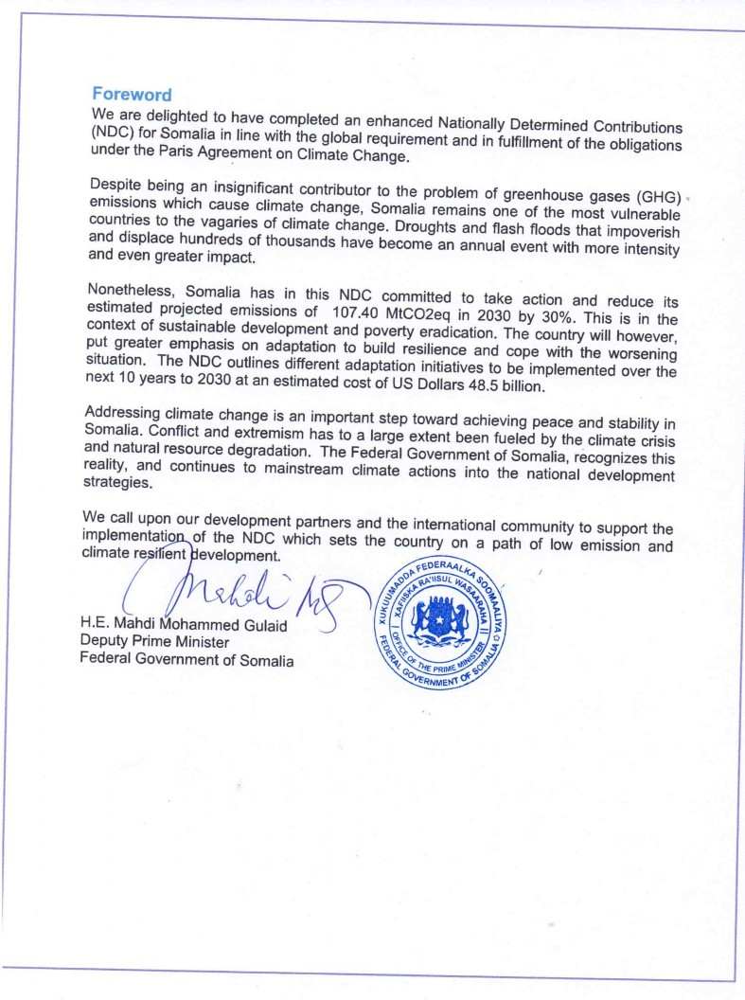

JULY 2021

List of Abbreviations and Acronyms
|
AFOLU: |
Agriculture, Forestry and Other Land Uses |
|
BAU: |
Business As Usual |
|
CO2: |
Carbon dioxide |
|
DoECC: |
Directorate of Environment and Climate Change |
|
FGS: |
Federal Government of Somalia |
|
GHG: |
Greenhouse Gas |
|
IDP: |
Internally Displaced Persons |
|
INC: |
Initial National Communication to the UNFCCC |
|
IPCC: |
Intergovernmental Panel on Climate Change |
|
LDC: |
Least developed Country |
|
MtCO2eq: |
million tonnes (megatonnes) of carbon dioxide equivalent |
|
NDC: |
Nationally Determined Contribution |
|
NCCP: |
National Climate Change Policy |
|
NCCC: |
National Climate Change Committee (NCCC) |
|
NDP: |
National Development Plan |
|
NAP: |
National Adaptation Plan |
|
REDD+ |
Reducing emissions from deforestation and forest degradation |
|
SDG: |
Sustainable Development Goals |
|
UNDP: |
United Nations Development Programme |
|
UNFCCC: |
United Nations Framework Convention on Climate Change |
Somalia has an estimated population of about 16 million, with 80 percent of the population being youth, almost 50.14 % being female and remaining being male1. Roughly 60 percent of the population are nomadic and semi- nomadic pastoralists and 60 percent live in rural areas. The country is considered among the poorest countries in the world with more than 69% of the population living below the international poverty line.2
Somalia continues to grapple with a fragile political system, insecurity, high levels of poverty, climate change-related shocks coupled with the COVID-19 pandemic. The latter resulted in a GDP reduction by 1.5% in 2020 compared to the 2.9% growth experienced in 2019.3 Overall economic growth was also hampered by a reduction in Foreign Direct Investment (FD1) due to the contentious 2021 Federal Government of Somalia elections, livestock export bans by Gulf nations, shrinking remittances due to COVID 19 impact, and global recession.
The country has little historical or current responsibility for global climate change but suffers disproportionately from the climate crisis. Climate change-related droughts, intermittent floods and desert locust infestation results in loss of livestock and agricultural production which account for more than 70% of GDP while employing millions directly and indirectly. The destruction of local communities’ main livelihood bases continues to increase the number of internally displaced persons and resultant humanitarian crises. Furthermore, climate change and variability impacts and conflicts are interlinked in Somalia and affects the affect the most vulnerable (particularly women and children) and resource-dependent communities.
Somalia is showing progress with recently found stability albeit multi-faceted challenges in economic, political and social aspects. Therefore, Somalia’s priority for the next decade is to spur sustainable economic growth through leveraging its natural resources and enhancing living standards for its population. The implementation of this NDC is consistent with Somalia’s National development agenda and reaffirms Somalia’s commitment to playing its role in addressing the climate change threat in line with the Principles and provisions of the UN Framework Convention and the Paris Agreement.
It is under these aforementioned National circumstances and in line with Article 4.9 of the Paris Agreement that Somalia presents its updated NDC to the UNFCCC. The implementation of the NDC requires cooperation, support and investments from both National stakeholders and International partners.
Somalia submitted its first NDC in November 2015 and remains committed to achieve the targets despite its challenges and national circumstances. Sustainable development, peace building and adaptation to climate change remain the highest priority for Somalia. Consistent with UNFCCC decisions and guidelines, Somalia has taken steps to prepare and submit this revised NDC to guide its climate change action agenda for the next almost 10 years and contribute to the global efforts to combat climate change.
Somalia has remained susceptible to climate change and resultant shocks due to its geographical setting with over 80% of the country considered Arid and Semi-Arid Lands (ASALS). Much of the brunt has been felt in the agriculture and livestock sector which together account for more than 70% of livelihood base for majority of the population. Somalia is one of the poorest nations in Africa with 69% of the population living below the poverty line. Somalia’s current GHG emissions are relatively low estimated at an estimated 53.70 MtCO2eq, representing less than 0.03 percent of total global emissions. However, it is expected that the sustained stability and peace will demand reconstruction and development on a larger scale leading to increased GHG emissions(estimated to double) under business as usual scenario.
Given the climate change impact on Somalia’s development agenda and the urgent need for assessing the global effort’s aggregated ambition included the updated NDC’s of all parties to the Paris Agreement, Somalia is pleased to submit information on its NDC update to the UNFCCC secretariat for consideration.
Somalia’s updated NDC was prepared through an inclusive, consultative multi-stakeholders technical and policy dialogues. Broad-based Federal and State level consultative workshops and engagements involving Government institutions (both Federal and State level), NGOs, CBOs, private sector, academic, and research institutions were undertaken throughout the process.
UNFCCC decisions and Somalia’s National development policies, strategies and action plans guided the NDC update preparation process. Priority actions for both adaptation and mitigation sectors were identified through a review of various climate change and National development relevant documents/reports and in consultation with all relevant stakeholders.
The Initial National Communication (INC) 2018 and recent technical mitigation analysis for NDC update were the foundation for the mitigation sector scenario analysis. Studies specific to Somalia were difficult to find for many mitigation options. The overall potential of each mitigation option was estimated by reviewing the best available primary and secondary data on the existing prevalence of the practice or technology, then conducting research or making assumptions about the amount of deployment that was possible or reasonable. Once this was determined, scenarios were developed that calculated the emissions impact of the mitigation option and its aggregate cost at the deployment scale determined to be appropriate with a start date of 2021 and an end date of 2030.
It is important to note that in some cases the INC data was found unrealistic by experts considering in comparison with information from other neighbouring countries in the eastern Africa and other similar countries (in terms of fragility, economic and population sizes) and similar growth trajectories. In these cases, other published international reports and data were utilized and average established. This information is likely to be further updated and verified through the next GHG inventory report and the ongoing first Biannual Update report project.
The Adaptation component of the NDC was informed by recently conducted study on adaptation baseline covering key vulnerable sectors of the economy. The priorities builds on the National Adaptation Plan of Action( 2013), federal sectors plans and priorities as well as Federal member states priorities informed by the consultation processes for the NDC. The country is will further refine the adaptation priorities in the ongoing NAP process under the GCF Funded NAP Readiness Project implemented through the UNDP.
With recently found stability, Somalia has made progress in the development of policies and institutional frameworks relevant to climate change, Natural Resource Management and overall National development. The existence of policies and regulatory frameworks are steps in the right direction although implementation challenges still exist at both the Federal and State levels. These Nation policies, plans and strategies have set the foundation for the preparation of Somalia’s revised NDC.
|
National Policy Documents |
Year |
|
|
1. |
The Ninth National Development Plan |
2020-2024 |
|
2. |
The Somalia National Climate Change Policy |
2020 |
|
3. |
The Power Master Plan for Somalia |
2019 |
|
4. |
The National Adaptation Programme of Actions |
2013 |
|
5. |
The National Environment Policy |
2019 |
|
6. |
Draft National Environmental Management Bill |
2020 |
|
7. |
Draft Environmental Social Impact Assessment Regulations |
2020 |
|
8. |
Somali National Disaster Management Policy |
2018 |
|
9. |
Integrated Water Resources Management Strategic Plan |
2019-2023 |
|
10. |
Recovery and Resilience Framework |
2018 |
|
11. |
The Initial National Communication to UNFCCC |
2018 |
|
12. |
The National Electricity Bill |
2019 |
|
13. |
National Energy policy 2018 |
2018 |
|
14. |
National Voluntary Land Degradation Neutrality Targets 2020 |
2020 |
|
15. |
The National Biodiversity Strategy and Action Plan |
2015 |
|
16. |
Somalia National Water Policy and National Water Resource Law |
2019 |
|
17. |
National Food Security and Nutrition Policy |
2020 |
|
18. |
National Fertiliser Policy |
2019 |
|
19. |
The UN Strategic Framework Somalia |
2020 |
|
20. |
National Drought Plan |
2020 |
|
21. |
National Water Resource Strategy 2021 -2025 |
2021 |
|
22. |
National Pesticide Policy |
2019 |
|
23. |
Somalia National Action Programme for the UN Convention to Combat Desertification |
2016 |
|
24. |
National Voluntary Land Degradation Neutrality Targets |
2020 |
|
25. |
National Capacity Assessment Towards Implementing the Environmental Treaties of the Rio Convention |
2017 |
The National Climate Change Policy, 2020 recently approved by Somalia Cabinet provides for the institutional arrangements for climate change. Some of these institutions are yet to be fully operationalized. The main entities established by the policy include:
Directorate of Environment and Climate Change(DoECC)- The office situated in the Office of the Prime Minister has the mandate of formulation of federal level climate policies, coordination of activities by federal institutions, Federal Member States, local governments, international partners, and other stakeholders in the climate change. The office also serves as UNFCCC National Focal point and the National Designated Authority(NDA) for Green Climate Fund.
National Climate Change Committee (NCCC) - The NCCC has the mandate for coordinating and supervising the implementation of the climate change policy. The NCCC is a multi- stakeholder, high level policy coordination committee and is responsible for the overall coordination and supervision of climate change activities in Somalia. It comprises the Prime Minister (or his designate), DG of the Directorate of Environment & Climate Change, Sectoral Ministries, Directors of Governmental Agencies, Member States’ Ministers for Environment, the private sector and civil society organizations.
Cross-Sectoral Committee on Climate Change (CSCC) – The CSCC brings together the officials from across government working on climate change; for information exchange, consultation, agreement and support among the spheres of government regarding climate change and government’s response to climate change. It will be chaired by the DG of the Directorate of Environment & Climate Change. Representatives could be at DG levels. The primary roles of the CSCCC are as follows: a) Serve as a cross-sector forum for the exchange of ideas, including the provision of updates on ongoing and planned climate change initiatives. b) Coordinate and advise sector-specific and cross-sector implementation of activities, and advise on monitoring and evaluation outcomes as well as future directions of the NCCP; and c) Address the cross-cutting and social aspects of climate change.
Key stakeholders in climate change planning and implementation in Somalia recognized by the policy include: Federal Sectoral Ministries Federal Member State Governments, Civil Society Organizations and private sector.
A comprehensive analysis of the state of the country’s climate change institutions during the NDC updating process revealed structural and systemic weaknesses in the institutional bedrock. This include lack the necessary capacity to address climate change and its associated challenges, financial weaknesses, the dearth of appropriate policies and inability to enforce laws. Moreover, most of the institutions suffer from a considerable deficiency in human, financial, organizational, and institutional capacity to manage the environment and natural resources and respond to the specific challenges that climate change brought to Somalia.
Somalia’s update NDC comprises of both mitigation and adaptation components. Overall, the country’s priority remains sustainable development and poverty eradication while sustaining stability and peace and building resilience to climate change impacts. Key principles guiding Somalia’s NDC process include: Country-driveness, linkages with National development and peace building efforts, maximizing co-benefits, gender-responsiveness, conflict-sensitive, participatory, inclusive and transparent, Guided by the best available scientific information including traditional and Indigenous knowledge and coordination. To achieve effective implementation of the NDC, Somalia will continue to enhance the relevant policy and institutional frameworks while taking into consideration critical principles such as National Development plans, Sustainable development and gender mainstreaming.
Somalia’s current GHG emissions are relatively low estimated at 53.70 MtCO2eq, representing less than 0.03 percent of total global emissions. The Agriculture, Forestry, and Land-use sectors are the major contributors to its emissions. As the country realizes its development aspirations, pursue stability and prosperity, with a growing population (estimated at 2.8% per annum growth) and economy with urbanization will mean increases in greenhouse gas (GHG) emissions. The emissions under Business as Usual scenario are expected to almost double to over 107.40 MtCO2eq in 2030, with significant emissions expected from AFOLU and energy sectors. Other sectors with emissions growth include transport and waste. The GHG emissions and projections will be updated through the ongoing Biannual Update report(BUR) project. The resultant BAU growth will mean environmental and social conditions, including increased competition over resources, could intensify vulnerability to climate risks. Transitioning to low emissions, climate- resilient development will address future risks, thereby improving Somalia’s ability to prosper under a changing climate while reducing the emissions intensity of a growing economy.
Somalia is thus committed to pursuing a low emission sustainable development pathway. Under the updated NDC, Somalia has set a target of achieving 30% emissions reductions against the Business As Usual (BAU) scenario estimate of 107.39 MtCO2eq by 2030. To achieve this target, Somalia will aim to reduce and avoid its GHG emissions by about 32.40MtCO2eq relative to the BAU scenario by 2030. The updated contributions are in line with Somalia’s National Planning processes, strategies and actions in the energy, agriculture, forestry, transport and Waste sectors.
The country The overall costs of the mitigation actions for the NDC period is estimated at USD 6.96 Billion. The proposed actions and estimated emissions reductions are elaborated below:
|
No |
Sector priorities and targets |
Estimated projected BAU emissions from the sector in 2030 (Mt CO2eq |
Emissions reductions as per the NDC target (Mt CO2eq) |
Costs/investment (USD million) for NDC period |
|
1. |
Agriculture Sector
|
41.12 |
5.88 |
600 |
|
2. |
Energy Sector
|
10.30 |
6.0 |
1,290 |
|
3. |
Forestry Sector
|
50.65 |
18.10 |
3,850 |
|
4. |
Transport Sector
|
2.5 |
1.40 |
1,170 |
|
5 |
Waste Sector
|
2.82 |
0.28 |
50 |
|
Total |
107.39 |
31.66 |
6,960 |
The table below provides further details about the country’s mitigation contributions as guided by UNFCCC decisions:
|
Key issue |
Information on the Somalia to provide clarity, transparency and understanding |
|
Base Year and Implementation Period |
The base year for Somalia NDC is 2015, and the timeframe for implementing mitigation and adaptation actions is 2021 to 2030. |
|
Mitigation target |
Somalia committed to reduce and avoid its emissions 30% by 2030 compared to BAU scenario (107.40MtCO2eq in 2030). The emissions reduction targets reflect introduce policies, programs and technologies that drive the country to low emissions development pathway. Due to the unique national circumstances, the implementation of the mitigation target will require international public and private support including in the form of finance, investments, technology development & transfer and capacity building |
|
Scope of gases included in the contribution |
Gases covered in this updated NDC are CO2, CH4 and NO2. Other gases were not taken into account, considering that their use and associated emissions are extremely low. Sectors and GHG emissions reported within this document cover 99.9% of national emissions. |
|
Sectors covered |
The emission reduction focuses on three broad sectors namely (1) AFOLU sector emissions through sustainable reduction of deforestation, land degradation, afforestation and reforestation, and national REDD+ strategy (2) Energy sector (electricity, transport, and household emissions) and (3) Solid waste disposal on land. |
|
BAU emissions projections and assumptions |
Both the population and economy of Somalia is on the rise and this growth will have significant implications for future emissions. Following a review of 2015- 2028 GDP data and formal population projections, the BAU were developed as part of the development of this updated NDC. The scenario assumes an economic growth at 4.9% and the population growth of three percent per year by 2030. Emissions are expected to increase in the forecasted maximum growth scenario, with economic growth of 7.5% by 2028. The BAU scenario also assumes that Somalia could exploit its massive untapped fossil fuels reserves(particularly oil and gas). |
|
Mitigation co-benefits resulting from adaptation actions |
Mitigation co-benefits associated with adaptation actions will be included. Some of the adaptation actions with the greatest mitigation co-benefit potential include the following: rangeland restoration, sustainable land management, agroforestry, reafforestation, clean energy investments, infrastructure development among others |
|
How Somalia considers its updated NDC contribution is fair and ambitious, in light of its national circumstances |
Somalia is one of the world’s least developed countries with poverty and conflict situations exacerbated by climate change. The country believes that, although its contribution to climate change has always been marginal, global efforts to reduce GHGs emissions will need to be differentiated based on a Party’s ecological footprint, historical responsibility, development capacity, technological capacity and population. Based on the country’s national circumstances, this NDC is fair and ambitious. Somalia considers its updated NDC contribution is ambitious since it establishes an overall national vision for low emissions and climate resilient development. The revised NDC goes beyond the pervious projects based NDC target to broad and quantified target for the period. This NDC is informed by technical mitigation and adaptation analysis and is comprehensive covering all key mitigation sectors. The country is also committing to establishing robust monitoring and verification system to support the implementation of the NDC. |
|
Carbon offsets |
Somalia shall not exclude the role of international market mechanisms to achieve its conditional 2030 targets, subject to the use of robust systems that enable real and verified emission reductions. The country expects that some investments in low-carbon, climate resilient infrastructure and some development options in its NDC can be funded in whole or in part through credit transfers /International carbon asset(s). |
|
Methodological approach |
The NDC was prepared in a consultative and inclusive manner. The NDC revision process was guided by technical mitigation analysis report. Broad based national and sub-national stakeholders’ consultative meetings were held during the process. The consultations brought together government institutions both national and sub-national levels, civil society organizations, academic and research institutions, the private sector across the country. National policies, legislations, strategies, programmes and action plans together with UNFCCC decisions guided the updating process of the NDC. Priority sectors on both adaptation and mitigation were identified through a review of various climate change, social, environmental and economic development benefits and their feasibility. |
|
Information on the circumstances under which the Party may update the values of the reference indicators |
The National GHG emissions may be updated with more country specific information and methodological improvements, including under the first BUR and second National communications |
|
Quality Control and Assurance |
To ensure the NDC quality compliance, the UNDP Climate Promise Quality Assurance Checklist has been applied. In additional national and international technical experts consulted on an ongoing basis throughout the updating process. The draft final report has also been subject to a technical peer review to verify the process and results. |
|
Accounting and verification system |
A measurement, reporting and verification (MRV) system will be established and the technical capacity, research and coordination of stakeholders will be enhanced. The achievement will be tracked on a biennial basis and reported as part of enhanced transparency framework under the Paris Agreement |
|
Institutional arrangement and Implementation process |
The implementation of the NDC will be undertake by both state and non-state actors in Somalia. Directorate of Environment and Climate Change(DoECC) at the Office of the Prime Minister of the Federal republic of Somalia is the main institution responsible for promoting implementation and coordination of the NDC in close collaboration with other ministries and stakeholders at federal and member states level. Capacity building, development of strategies, supportive mechanisms, monitoring and public awareness and participation for the NDC implementation will be undertaken by the DoECC with support from partners. |
|
Monitoring-Evaluation (M&E) a |
The Federal Government of Somalia, through the DoECC has the full responsibility to monitor and evaluate through regular stakeholders’ consultative engagement. This will ensure the effective coordination, resource mobilisation and implementation of NDC target. Monitoring and evaluation of the Mitigation and adaptation actions/projects will be harmonized. Inconsistent data and systems will be synchronized across sectors of national and subnational institutions. This would provide a holistic view of the overall status of projects and outcomes/outputs. Furthermore, updated information and data analysis through the revised GHG inventory and first Biannual update report will inform the target. |
As a highly vulnerable country, adaptation and building resilience to climate change is the country’s highest priority. Through the adaptation contribution of the NDC, Somalia aims to enhance adaptive capacity, strengthen resilience and reduce vulnerability to climate change through mainstreaming climate adaptation to into sustainable development.The priority areas for climate change adaptation in Somalia from 2021 to 2030 are informed by its 2020 adaptation baseline assessment and based on Somalia's national and sub-national adaptation plans and policies, including NAPA, which provides a climate change adaptation strategy and a climate change risk mitigation plan. The country has initiated its NAP process and has starting implementing a GCF funded NAP readiness project to enhance its capacity, establish legal and institutional frameworks and further define its medium term and long-term adaptation actions in priority sectors. The NAP will be the main guiding instrument to implement the country’s adaptation priorities.
Somalia’s NDC estimates the cost of implementing the adaptation components of the NDC target at USD 55.5 Billion for the 10 years. This translates to financial resources needed for implementation of the identified adaptation contributions is about USD 5.55 billion per annum from 2021- 2030. It is important to note some of adaptation actions have mitigation co-benefits. The table below indicates the proposed adaptation actions and estimated costs:
|
# |
Adaptation sectors/proposed actions |
Estimated investment required (in USD, 2021-2030) |
|
1. |
Agriculture and Food security:
|
$10 billion |
|
2. |
Water resources management and public health
|
$15 billion |
|
3. |
Disaster preparedness and management
|
$10 Billion |
|
4. |
Coastal, marine environment and fisheries
|
$3 Billion |
|
5. |
Energy
|
$5 billion |
|
6. |
Forestry and Environment
|
$300million |
|
7. |
Human settlements
|
$200 million |
|
8. |
Infrastructure including roads, bridges
|
$5Billion |
|
Total |
$48.5 Billion |
Somalia remains one of the most unequal countries with the Gender Index standing at 0.776(1 – complete inequality) placing Somalia at the fourth-highest position globally. Climate Change has exacerbated gender inequality in Somalia, with women and children affected more by climate change effects due to lack of access and control of critical resources, biased labor division and absence from decision making processes from household to the National level. For example, reports indicate that 70-80% of those in IDPs and refugee camps are women, who are exposed to gender based violence.4 On the other hand, women and youth can act as agents of change and play a key role in supporting the transition towards low emissions and climate resilient development in Somalia. There are critical gender issues across sectors and hence the promotion of gender equality is critical for effective climate adaptation and mitigation in Somalia. The country needs to be supported to undertake comprehensive and in-depth gender analysis to inform gender integration across climate adaptation and mitigation sectors. There is a need to build capacities of key stakeholders at all levels including decision-makers on mainstreaming gender in climate actions.
The estimated cost of implementing Somalia’s NDC is approximately USD 55.5 billion for the period 2021- 2030. The Federal government of Somalia will strive to mainstream the NDC actions into the national development planning and budgeting processes. As an LDC country with unique national circumstances, the Government of Somalia does not have the fiscal capacity to mobilize financial resources for the implementation of the NDC actions.
The successful implementation of both adaptation and mitigation actions thus, require provisions of adequate and predictable financial resources, transfer of environmentally sound technologies and capacity building support. Financial support through multilateral and bilateral channels and sources will be critical to facilitate transparent and successful implementation of the NDC. The private sector is already involved in climate mitigation and adaptation interventions in the forestry, energy, waste, water, transport and disaster risk response among others. There is need for focus strategic efforts and engagements with private sector in order to leverage the potential of these entities to support a more resilient and green Somalia.
Similarly, there is a need for enhanced capacity building of various institutions and strengthening policy and legislative frameworks to support Somalia enhance its adaptive capacities to climate change. In particular, the country requires support to enhance capacities to access multilateral and bilateral climate finance sources, address barriers and enhance private sector investments and establish effective institutional mechanisms to enhance mobilization and effective utilization of climate finance. The country will require support to establish national MRV system and strengthen its institutional set-up with adequate infrastructure and human resources to track climate actions.